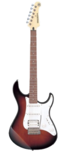
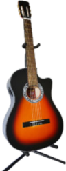

Guitarras acusticas

$400,000
Guitarra acústica semiecológica
Guitarra acústica ecológica. Fabricada a mano con excelente selección de maderas Cedro.
$200,000
Guitarra acústica GB-1
Contiene: tapas de perillo, aros, fondo y mastil de Cedro, diapasón y puente de Roble, clavijero metálico y boquilla de adhesivo$200,000
Guitarra Acústica GB-1 Corte
Contiene: tapas de perillo; aros, fondo y mastil de Cedro; diapasón y puente de Roble; clavijero metálico y boquilla es un adhesivo$500,000
Guitarra Acústica semiprofesional GS-2 Corte
Contiene: tapa de pino Abeto macizo; aros y fondo de roble; mastil de Cedro; diapasón y puente de bálsamo y zapan; clavijero empedernado dorado y boquilla es una incrustacion de maderas$1,370,000
GUITARRA FOLK ACUSTICA FX-370CNT COLOR NATURAL
Sus características de construcción hacen del modelo FX730C una guitarra que suena mejor, es más cómoda de tocar y tiene una estética más atractiva que la mayoría de las guitarras de precio similar Entre dichas características destacan el acabado en poliuretano ultrafino, tapa de picea, costados y tapa posterior de nato, clavijero de alta calidad, cuerpo tradicional tipo western con cutaway, tapa de pícea.$220,000
Guitarra para Aprendiz + Afinador y Estuche
Contiene: respaldo y servicio de reparaciones directo con AIRE ARTESANAL; clavijero sencillo; diapasón en pardillo; laca y pinturas de gran calidad; colores surtidos; cuerdas en nylon, 18 trastes y cuerpo enchapado en cedro.Guitarras electricas

$799,000
GUITARRA ELECTRICA PACIFICA 012 COLOR NEGRO
Guitarra eléctrica para principiante de alta calidad, cuerpo de Agathis, Mástil de Arce, Diapasón de Palo de Rosa, 3 microfonos tipo Humbucker (doble), Single (sencillo), Single (sencillo) y selector de 5 posiciones. 1 potenciómetro de Volumen General y 1 potenciómetro de Tono General, Puente tipo tremolo y clavijas cubiertas estándar, 22 trastes tipo Medium, Ideal para tocar géneros como Rock, Pop, Blues y géneros musicales afines.

$980,000
GUITARRA ELÉCTRICA PAC-112J SUNBURST
Guitarra eléctrica semi-profesional de gran versatilidad sonora, Cuerpo de Aliso, Mástil de Arce, Diapasón de Palo de Rosa, 3 microfonos tipo Humbucker (doble), Single (sencillo), Single (sencillo) y selector de 5 posiciones, 1 potenciómetro de Volumen General y 1 potenciómetro de Tono General, Puente tipo tremolo y clavijas cromadas diecast, 22 trastes tipo Medium, Ideal para tocar géneros como Rock, Pop, Blues y géneros musicales afines.
$2,070,000
GUITARRA ELÉCTRICA YAMAHA REVSTAR RS-420FR
"Equilibrio" es un concepto simple pero normalmente muy difícil de conseguir. La RS420 combina unas prestaciones excelentes con una intensa personalidad propia. Sí, es tan buena como parece: cuerpo macizo con mástil encolado, tapa de arce y rebaje trasero, pastillas Humbucker de Alnico y toda la magia del estilo retro de las Revstar. Con su configuración clásica HH y su mástil estilizado, se presta para el Rock pero se desenvuelve en todos los terrenos musicales con soltura y versatilidad sonora gracias al Dry Switch que recorta graves, aportando definición y suavidad en momentos clave.$1,650,000
GUITARRA ELÉCTRICA YAMAHA REVSTAR RS-320VW
Directa y simple, sobrealimentada y lista para dar caña, la RS320 puede con todo. El modelo básico Revstar combina la potencia de su cuerpo macizo de mástil encolado con el estilo y diseño retro de la serie. Las pastillas cerámicas de tipo Humbucker y su mástil estilizado se prestan al Rock, aunque la guitarra se desenvuelve en todos los terrenos con un cálido gruñido y un tono definido, con clase.$1,360,000
GUITARRA ELECTRICA SQUIER BY FENDER STRATOCASTER AFFINITY SERIES AZUL
Una magnífica puerta de entrada a la tradicional familia Fender, la Squier Affinity Series Stratocaster, ofrece un diseño legendario y un tono por excelencia para el aspirante a héroe de la guitarra de hoy, esta Strato presenta varios refinamientos amigables para el guitarrista, como: Un cuerpo delgado y liviano, un perfil de cuello delgado y cómodo en forma de "C", un puente de trémolo de 2 puntos para una acción de trémolo superior y máquinas de afinación selladas a presión con ejes divididos para afinación suave y precisa y fácil encordado.$1,324,000
GUITARRA ELECTRICA CORT G250 FR BLANCA
Mástil de Arce de 1 pieza (Radio de 400 ㎜) con Diapasón de Arce: El mástil y el diapasón están tallados en arce de 1 pieza, que se mantiene fiel a la autenticidad de las guitarras, brindando un tono sólido y calidad de construcción. Desconocido entre muchos guitarristas, el diapasón es un componente vital del sonido general de la guitarra. El Arce es una opción muy popular debido a su rigidez y estabilidad, pero también por su fuerte tono de rango medio-alto y articulación. Junta de Cuerpo-Mástil con Talón Biselado: A diferencia del talón de corte cuadrado de las guitarras atornilladas tradicionales, el talón en la Serie G es biselado redondo y delgado para un acceso más fácil y suave a los trastes en el registro alto del diapasón.Guitarras clasicas

$3,763,900
GUITARRA CLASICA ALHAMBRA 3C
Si eres estudiante de guitarra, con el modelo 3C puedes ver un paso más en términos de rendimiento en comparación con los modelos 1C y 2C, el 3c agrega fijaciones de palisandro, afinadores de mayor calidad e incrustaciones adicionales en la parte posterior de la guitarra, la guitarra Alhambra modelo 3C es una hermosa guitarra. Hecha a mano y cuidando todos los detalles, significa un paso más en la línea del estudiante, un instrumento robusto, versátil y con un tono maravilloso, con un sonido suave y un acabado de muy buena calidad, es una gran opción para trabajar la técnica, una opción segura para iniciarse en el estudio de la guitarra, en cuanto a la montura y la cejilla se ha utilizado la melamina, un material sintético muy transmisor de sonido y que contribuye a un sonido redondo y definido.
$190,000
Guitarra Clásica GB-1
Contiene: tapa de Perillo; aros, fondo y mástil hecho en Cedro; diapasón y puente de Roble; clavijero Metálico; boquilla es un Adhesivo
$180,000
Guitarra Clasica GB-1M ¾
Contiene: tapa de Perillo; aros, fondo y mástil hecho en Cedro; diapasón y puente de Roble; clavijero empedernado plateado; boquilla es un Adhesivo$170,000
Cuatro Llanero CB-1
Contiene: tapa de Perillo; aros, fondo y mástil hecho en Cedro; diapasón y puente de Roble; clavijero empedernado plateado$230,000
Tiple Colombiano
Contiene: tapa de Perillo; aros, fondo y mástil hecho en Cedro; diapasón y puente de Roble; clavijero Metálico; boquilla es un Adhesivo$150,000
Tiplillo
Instrumento de enseñanza para niños a partir de 5 años de edad, tapa armónica en perillo, aros y fondo en cedro, diapasón en roble, 8 cuerdas, clavijero con pernos metálicos, acabado mateGuitarras electroacústicas

$350,000
Guitarra Electroacústica GB-1AX
Contiene: tapa de Perillo; aros, fondo y mástil hecho en Cedro; diapasón y puente de Roble; clavijero Metálico; boquilla es un Adhesivo; el microfono es activo.

$250,000
Guitarra GB-1PX Electroacústica
Contiene: tapa de Perillo; aros, fondo y mástil hecho en Cedro; diapasón y puente de Roble; clavijero Metálico; boquilla es un Adhesivo; el microfono es pasivo.$650,000
Guitarra Electroacústica Semiprofesional GS-2X
Contiene: tapa de Pino Abeto macizo; Aros y fondo de Roble; mástil hecho en Cedro rojo; diapasón y puente en Bálsamo y Zapan; clavijero es un Empernado dorado; la boquillaes Incrustación en madera; el micrófono es Activo con afinador incorporado.$1,100,000
Guitarra Electroacústica Profesional GP-2X
Contiene: tapa de Pino Abeto macizo; Aros y fondo en Palo santo; mástil hecho en Cedro rojo; diapasón y puente en Ébano y palo de rosa; Clavijero de lujo escala 1:16; la boquilla es Incrustación en madera; el micrófono es Activo con afinador incorporado.$1,300,000
Guitarra Electroacústica Profesional GP-1X
Contiene: tapa de Pino Abeto macizo; Aros y fondo en Palo santo; mástil hecho en Cedro rojo; diapasón y puente en Ébano y palo de rosa; Clavijero de lujo escala 1:16; la boquilla es Incrustación en madera; el micrófono es Activo con afinador incorporado.$1,300,000